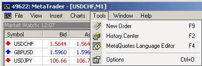
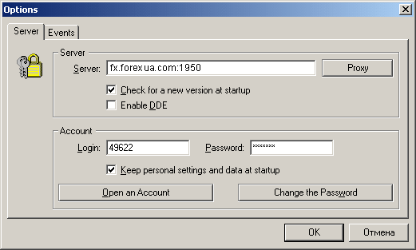
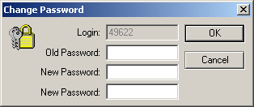
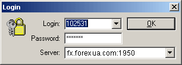
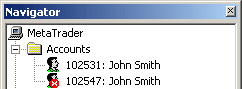

Настройки сервера и счета
Для
настройки клиентского терминала необходимо выбрать меню "Tools - > Options", или
нажать комбинацию клавиш "Ctrl-O", или нажать на
кнопку :

Появится окно:

Для связи клиентского терминала с сервером
необходимо знать интернет адрес (IP-адрес или доменное имя) MetaTrader
сервера. Если связь с сервером осуществляется через порт 1950, то в поле
"Server" так и должно быть записано "адрес
сервера:1950", в данном случае fx.forexua.com:1950.
При отметке
галочкой "Разрешить использование DDE" (Enable
DDE), котировки приходящие в MetaTrader транслируются вовне по
протоколу dynamic data exchange. Пример использования для MS Excel вы
можете посмотреть в файле DDE Sample (ярлык к нему находится в группе
программ MetaTrader).
В настройке счета необходимо указать номер счета
(или Login) и пароль(Password). Эта информация будет записана на компьютере,
если вы отметите галочкой опцию "Хранить личную информацию" (Keep personal settings and data).
Внимание: НЕ ОСТАВЛЯЙТЕ ЭТУ
ОПЦИЮ ВКЛЮЧЕННОЙ ПРИ РАБОТЕ С РЕАЛЬНЫМ СЧЕТОМ НА МАШИНЕ, К КОТОРОЙ ИМЕЮТ
ДОСТУП ДРУГИЕ ЛЮДИ.
Смена пароля производится из окна настроек сервера
после нажатия кнопки "Сменить пароль" (Change the
Password).

Для смены пароля необходимо ввести текущий пароль и
два раза (для контроля правильности ввода) ввести новый пароль.
Обязательно запишите в недоступном для других месте свой новый
пароль.
Открыть следующий демо-счет можно так же, как и
первый.
Внимание: В
текущий момент времени клиентский терминал MetaTrader обслуживает только
один счет!
Для перехода к другому счету в окне "Navigator" необходимо выбрать нужный номер счета и
перейти к окну "Login" либо дважды нажав левую
кнопку мыши, либо нажав кнопку "Login" в
контекстном меню.

После
нажатия кнопки "OK" клиентский терминал
MetaTrader переходит к обслуживанию выбранного счета.
Чтобы перейти
к работе с реальным счетом,необходимо в окнах "Login" либо "Options"
установить соответствующие параметры счета (логин, пароль, номер сервера и
номер порта) и нажать кнопку "OK", после чего в
окне "Navigator" в папке "Accounts" появляется номер реального счета и имя
пользователя, в окне "Terminal" появляется строка
с финансовыми реквизитами реального счета и клиентский терминал MetaTrader
переходит к обслуживанию реального счета.

Назад Содержание Далее